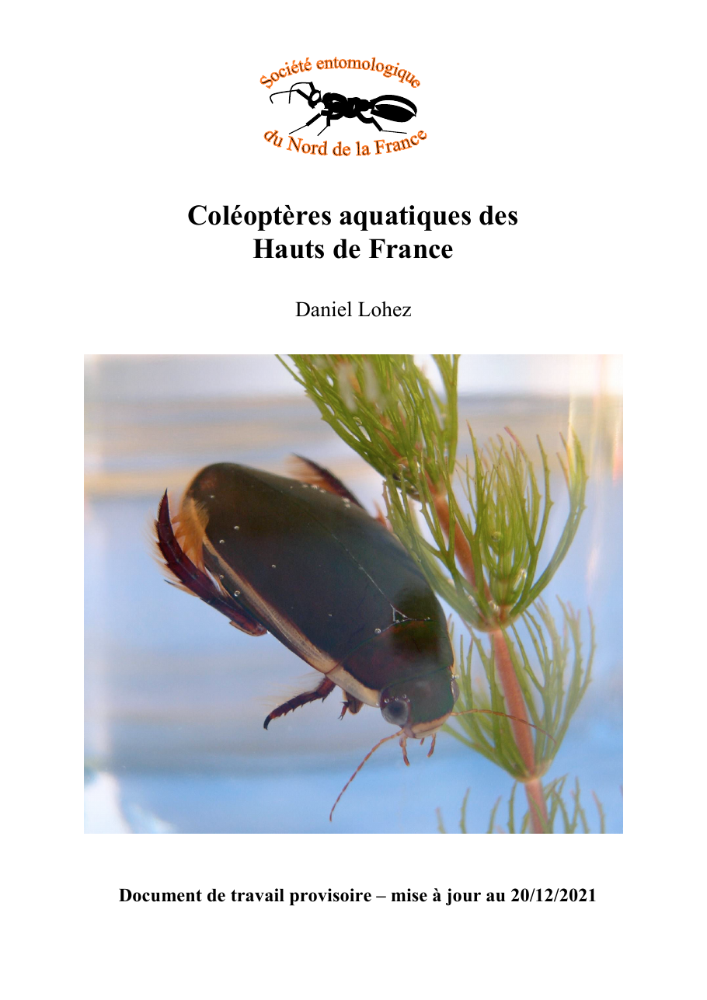
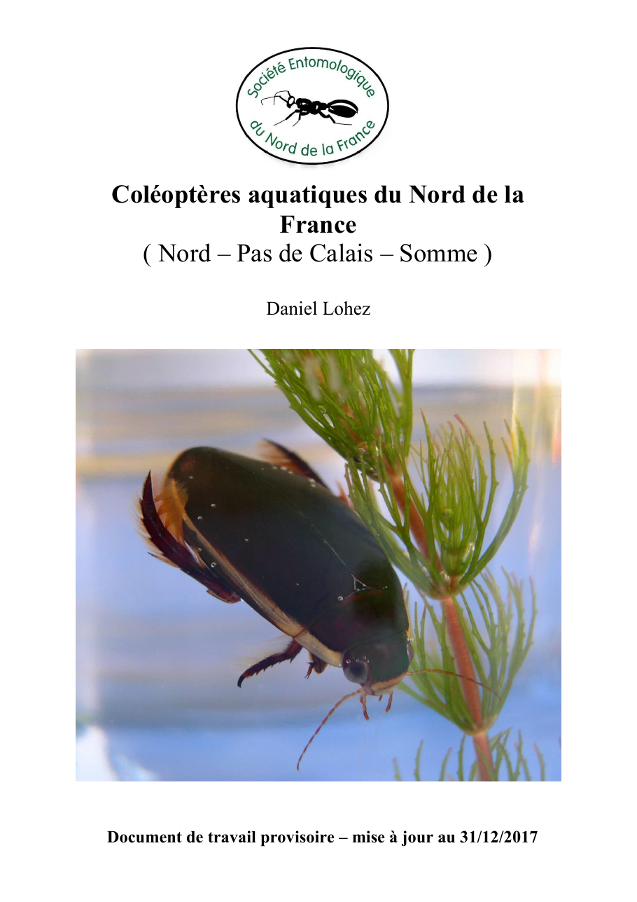
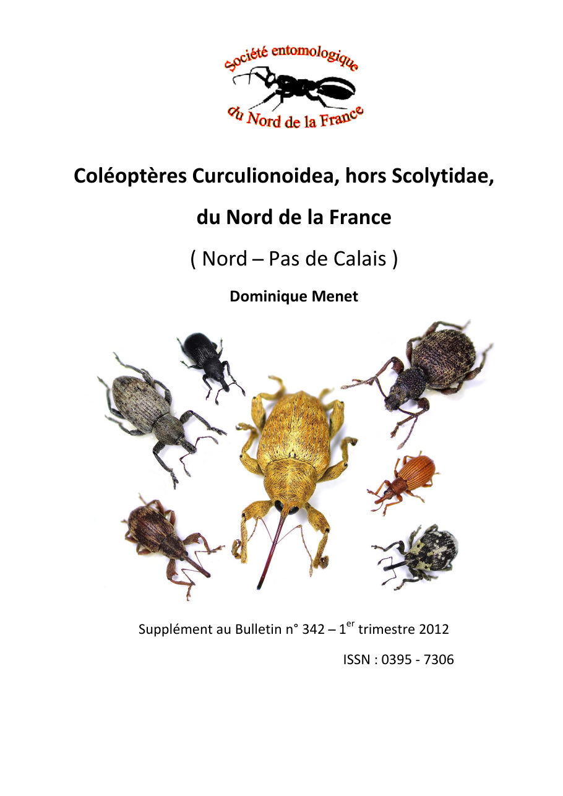
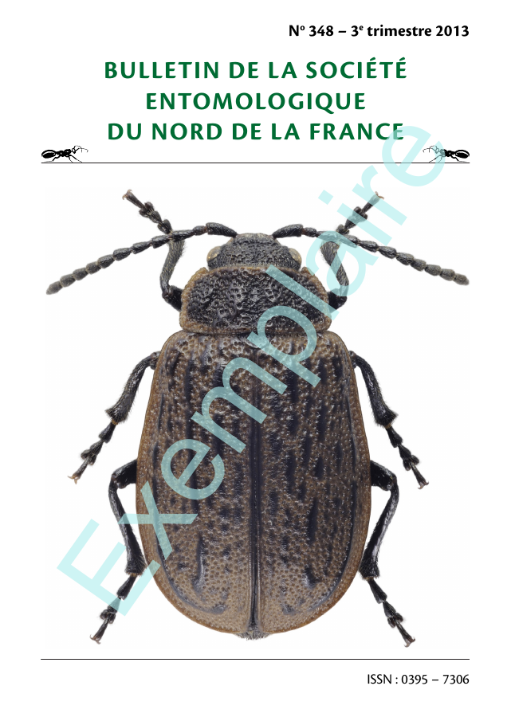

Sorties naturalistes
Prospections collectives, découverte des milieux et partage des méthodes d’observation.
Demander le calendrier →Entomologie · Hauts-de-France
Depuis sa création, la SENF réunit débutants, naturalistes et spécialistes autour de l’étude de la faune entomologique régionale, des sorties de terrain et de la publication scientifique.
Découvrir la société Consulter les publicationsVie de l’association
La SENF accueille les personnes qui souhaitent découvrir les insectes comme les entomologistes confirmés. Les réunions, sorties et enquêtes alimentent une connaissance régionale patiemment construite.
Prospections collectives, découverte des milieux et partage des méthodes d’observation.
Demander le calendrier →Des enquêtes historiques ont notamment porté sur les fourmilions, les sésies et le Petit Paon de nuit.
Consulter les archives →Présentations, échanges de connaissances et accès aux ressources documentaires de l’association.
Découvrir la SENF →Mémoire de la société
Des premiers bulletins mensuels aux catalogues spécialisés, les membres de la SENF ont constitué une mémoire scientifique précieuse pour le Nord de la France.
Lire l’histoire complèteFondation de la Société entomologique du Nord de la France et parution des premiers bulletins.
Publication du Catalogue des Hyménoptères du département du Nord et des régions limitrophes d’Ernest Cavro.
Parution du Catalogue des Odonates du Nord de la France, sous l’impulsion de Maurice Goulliart.
Conserver, rendre accessibles et poursuivre les connaissances recueillies par plusieurs générations.
Bibliothèque numérique
La SENF publie son bulletin depuis 1937. Plusieurs catalogues régionaux récupérés dans les archives sont désormais prêts à être remis à disposition.

D. Lohez — document de travail, mise à jour du 20 décembre 2021.

Nord, Pas-de-Calais et Somme — D. Lohez.

D. Menet — supplément au bulletin n°342.

Un exemplaire historique du bulletin trimestriel est disponible.
Histoire des sciences
Onze notices biographiques récupérées témoignent de la richesse scientifique et humaine de l’entomologie régionale.
Instituteur, conservateur et spécialiste des Hyménoptères, il fut l’un des fondateurs de la SENF.
Demander la notice →Homme de terrain et observateur rigoureux, il consacra une grande part de sa vie aux micro-coléoptères.
Demander la notice →Zoologiste, cofondateur puis président de la Société, il contribua durablement à la connaissance faunistique régionale.
Demander la notice →Rejoindre l’association
Participer aux activités, rencontrer d’autres entomologistes et recevoir le bulletin de la Société.
Tarifs et coordonnées à actualiser avant publication.